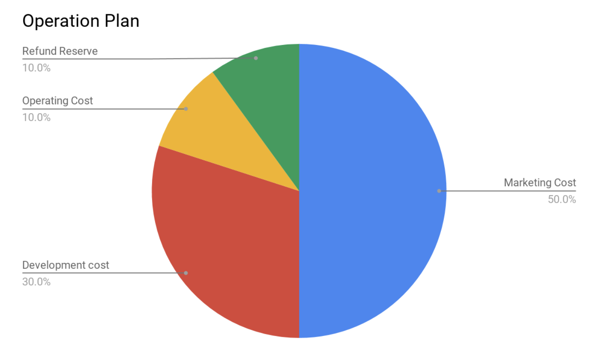

친애하는 여러분,
이 문서는 DunkPay 토큰 판매에 관련한 글 입니다. DunkPay는 암호화폐를 이용한 결제시스템 으로써 현재 서비스 중에 있습니다. DunkPay는 현재 BTC, BCH, ETH 암호화폐를 이용하여 결제할 수 있습니다. 사용자가 DunkPay를 통하여 결제를 하게 되면 1%의 수수료를 부과 합니다. 우리는 이 수수료를 얻을 권리를 토큰으로 판매하기로 결정 하였습니다. DunkPay는 운영 중인 서비스 입니다. 특정한 판매기간 이나 제약사항을 걸지 않습니다. 언제든지 환불도 가능합니다.
ETH를 보내면 구매 , DNK를 보내면 환불
DunkPay 토큰을 구매 또는 판매 하는 것은 별도의 거래소가 필요 없습니다. 사용자가 스마트컨트랙트 주소로 ETH를 입금하면 DunkPay 토큰을 획득 할 수 있고, DNK를 입금하면 ETH를 환불 받을 수 있습니다. 구매, 환불, 파산 등 모든 기능은 스마트컨트랙트로 작동합니다.
스마트 컨트랙트 주소 : 0x2e1f51019c867d9c4c7553cf707b2612e1e1889e
DunkPay 토큰 (ERC20 - DNK)
전체 발행량 : 10,000,000 DNK
판매 발행량 : 4,900,000 DNK (49%)
추가 발행량 : 토큰보유자를 위한 PoS
DunkPay 토큰 PoS (Proof-of-Stake)
룰은 매우 간단합니다. 매월 1일 (GMT 00:00 기준) 스냅샷을 진행합니다. 보유량/총발행량 을 기준으로 DunkPay 토큰 을 받게 됩니다. (단 , 수수료 수입이 발생하지 않으면 이월될 수 있습니다.)
예 - 2018년 11월, DunkPay 수수료 총 매출 - 1,200 ETH * 1000
2018년 12월 1일, 각 사용자에게 (보유량/총발행량) * 1,200,000 DNK 를 받게됩니다.
5,000 DNK 보유자 = (5000/10000000) * 1200000 = 600 DNK 드랍
DunkPay 토큰 단위
| Unit | Value | Jordan |
|---|---|---|
| jordan (Jordan) | 1 jordan | 1 |
| Kjordan (Magic) | 1e3 jordan | 1,000 |
| Mjondan (Shaq) | 1e6 jordan | 1,000,000 |
| Gjordan (Kobe) | 1e9 jordan | 1,000,000,000 |
| microdunk (LeBron) | 1e12 jordan | 1,000,000,000,000 |
| millidunk (Stephan) | 1e15 jordan | 1,000,000,000,000,000 |
| dunk (DNK) | 1e18 jordan | 1,000,000,000,000,000,000 |
ETH 와 동일한 단위를 적용합니다. 1DNK는 1e18의 조단으로도 표현할 수 있습니다. 유감스럽게도 코비나 르브론은 조단의 적수가 되지 못합니다.
DunkPay 토큰 계약 (구매)
고객은 스마트컨트랙트 주소로 ETH를 입금하면 즉시 DunkPay 토큰을 동일한 ETH주소로 토큰을 받습니다. 잔여 판매수량에 따라 최대 50%의 보너스를 적용받습니다.
1 ETH = (1 + 0.5 * (판매 잔여수량/판매수량) ) * 1000 DNK
예 - 총 4,900,000 DNK에 2,450,000 DNK가 판매된 상황
1 ETH = (1 + 0.25) * 1000 = 1,250 DNK
DunkPay 토큰 환불 (판매)
고객은 스마트컨트랙트 주소로 DNK를 입금하면 즉시 ETH주소로 ETH를 환불 받습니다. 구매와 반대의 계산공식이 적용됩니다. (단, 환불수수료 1%를 차감합니다.)
1 DNK = (1 - 0.5 * (판매 잔여수량/판매수량)) / 1000 ETH
예 - 총 4,900,000 DNK에 2,450,000 DNK가 판매된 상황
1 DNK = (1 - 0.25) / 1000 = 0.00075 ETH
환불수수료 = 0.0000075 ETH
DunkPay 토큰 종료 (파산)
DunkPay는 토큰의 환불준비금을 예치해야 할 의무를 가집니다. 단, 경영악화의 사정으로 환불준비금을 마련할 수 없는 경우 파산계약을 실행합니다. 첫번째 순서로 판매되지 않은 모든 토큰을 소각합니다. 나머지 DunkPay 토큰 보유자들에게 보유량 대비 모든 ETH를 에어드랍 하게됩니다.
DunkPay 토큰 운영계획
운영계획은 매우 투명합니다. DunkPay 토큰판매가 성공적으로 이루어질 경우, 환불준비금(10%)을 제외한 나머지 ETH는 회사의 발전을 위해 집행 할 것입니다. 예상되어지는 집행비율은 다음과 같습니다.

매월 첫날에 홈페이지와 이메일을 통해서 집행내용을 공개합니다.
최고의 시나리오
마케팅비용이 특정 수준(1,000,000 USD)을 넘어선다면 NBA 드림팀매치를 라스베가스에서 진행하겠습니다. 마이클 조던의 1992년 드림팀과 샤킬오닐의 1994년 드림팀의 대결을 기대합니다. 일정수량 이상의 DunkPay 토큰 보유자의 경우 무료VOD와 현장관람의 기회를 제공합니다.
마치는 글
현재 고수익을 보장하는 미래지향적인 토큰들이 판매되고 있습니다. 하지만, 당장 수익율을 기대할 수 있는 토큰은 찾아보기 힘든 것이 사실입니다. 우리는 여러분에게 공기 나 물처럼 보이지 않는 상품을 판매하지 않습니다. 당장 수익을 창출할 수 있는 토큰판매에 참여해 보세요. 당신은 보여지는 상품을 구매할 자격이 있습니다!
Sincerely yours,